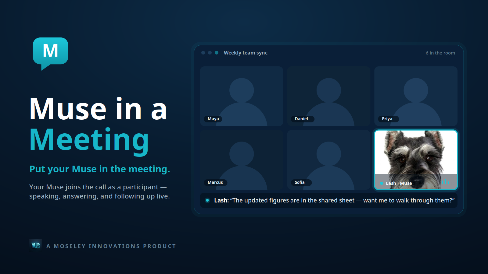

Put your Muse
in the meeting.
Bring your own AI assistant into live video meetings—with its own tile, face, and voice. It listens, speaks, answers questions, and follows up.

Get input while you weigh the options.
Ask your Muse questions during the discussion.
Let everyone engage with the answer.
Clients and colleagues can hear, question, and respond to your Muse.
Keep the work moving afterward.
Work through the meeting’s next steps with your Muse.
Join the Meeting
Opens Google Meet in your browser or the Meet app.